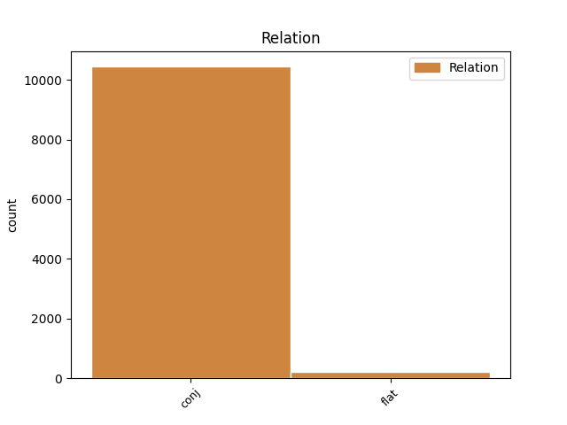

Distribution of features within this leaf

Agreement Rules sorted by frequency.
- When the dependent token is the conjunct(conj) of the head token, and the dependent token is NOUN.
1 Hetta _ _ _ _ 0 _ _ _
2 er _ _ _ _ 0 _ _ _
3 ein _ _ _ _ 0 _ _ _
4 tvey _ _ _ _ 0 _ _ _
5 ára _ _ _ _ 0 _ _ _
6 útbúgving _ _ _ _ 0 _ _ _
7 , _ _ _ _ 0 _ _ _
8 sum _ _ _ _ 0 _ _ _
9 er _ _ _ _ 0 _ _ _
10 býtt _ _ _ _ 0 _ _ _
11 upp _ _ _ _ 0 _ _ _
12 í _ _ _ _ 0 _ _ _
13 fýra _ _ _ _ 0 _ _ _
14 semestur _ _ _ _ 0 _ _ _
15 , _ _ _ _ 0 _ _ _
16 har _ _ _ _ 0 _ _ _
17 møguleiki _ _ _ _ 0 _ _ _
18 er _ _ _ _ 0 _ _ _
19 at _ _ _ _ 0 _ _ _
20 nema _ _ _ _ 0 _ _ _
21 sær _ _ _ _ 0 _ _ _
22 kunnleika _ _ _ _ 0 _ _ _
23 í _ _ _ _ 0 _ _ _
24 uppmáting uppmáting NOUN _ Definite=Ind|Gender=Fem|Number=Sing 0 _ _ _
25 , _ _ _ _ 0 _ _ _
26 viðgerð _ _ _ _ 0 _ _ _
27 av _ _ _ _ 0 _ _ _
28 uppmátingardáta _ _ _ _ 0 _ _ _
29 , _ _ _ _ 0 _ _ _
30 og _ _ _ _ 0 _ _ _
31 fyriskipan fyriskipan NOUN _ Definite=Ind|Gender=Fem|Number=Sing 24 conj _ _
32 og _ _ _ _ 0 _ _ _
33 stýring _ _ _ _ 0 _ _ _
34 av _ _ _ _ 0 _ _ _
35 byggiprojektum _ _ _ _ 0 _ _ _
36 . _ _ _ _ 0 _ _ _
1 Onnur _ _ _ _ 0 _ _ _
2 mál mál NOUN _ Case=Nom|Gender=Neut|Number=Sing 0 _ _ _
3 , _ _ _ _ 0 _ _ _
4 sum sums ADJ _ Case=Nom|Gender=Neut|Number=Sing 2 conj _ _
5 vit _ _ _ _ 0 _ _ _
6 hava _ _ _ _ 0 _ _ _
7 viðgjørt _ _ _ _ 0 _ _ _
8 eru _ _ _ _ 0 _ _ _
9 : _ _ _ _ 0 _ _ _
10 Fyrispurningur _ _ _ _ 0 _ _ _
11 um _ _ _ _ 0 _ _ _
12 góðgæti _ _ _ _ 0 _ _ _
13 : _ _ _ _ 0 _ _ _
14 Foreldur _ _ _ _ 0 _ _ _
15 spurdu _ _ _ _ 0 _ _ _
16 , _ _ _ _ 0 _ _ _
17 um _ _ _ _ 0 _ _ _
18 forboð _ _ _ _ 0 _ _ _
19 skuldi _ _ _ _ 0 _ _ _
20 setast _ _ _ _ 0 _ _ _
21 fyri _ _ _ _ 0 _ _ _
22 , _ _ _ _ 0 _ _ _
23 at _ _ _ _ 0 _ _ _
24 góðgæti _ _ _ _ 0 _ _ _
25 kom _ _ _ _ 0 _ _ _
26 inn _ _ _ _ 0 _ _ _
27 um _ _ _ _ 0 _ _ _
28 skúlans _ _ _ _ 0 _ _ _
29 gátt _ _ _ _ 0 _ _ _
30 . _ _ _ _ 0 _ _ _
1 38 _ _ _ _ 0 _ _ _
2 ) _ _ _ _ 0 _ _ _
3 Innaneftirlit _ _ _ _ 0 _ _ _
4 : _ _ _ _ 0 _ _ _
5 Skipað _ _ _ _ 0 _ _ _
6 tiltøk _ _ _ _ 0 _ _ _
7 , _ _ _ _ 0 _ _ _
8 sum _ _ _ _ 0 _ _ _
9 skulu _ _ _ _ 0 _ _ _
10 tryggja _ _ _ _ 0 _ _ _
11 , _ _ _ _ 0 _ _ _
12 at _ _ _ _ 0 _ _ _
13 virksemið _ _ _ _ 0 _ _ _
14 á _ _ _ _ 0 _ _ _
15 alibrúkinum _ _ _ _ 0 _ _ _
16 verður _ _ _ _ 0 _ _ _
17 lagt _ _ _ _ 0 _ _ _
18 til _ _ _ _ 0 _ _ _
19 rættis _ _ _ _ 0 _ _ _
20 , _ _ _ _ 0 _ _ _
21 skipað _ _ _ _ 0 _ _ _
22 , _ _ _ _ 0 _ _ _
23 útint _ _ _ _ 0 _ _ _
24 og _ _ _ _ 0 _ _ _
25 viðlíkahildið viðlíkahildið NOUN _ Aspect=Perf|Case=Nom|Gender=Neut|Number=Sing|Strength=Strong|Tense=Past|VerbForm=Part|Voice=Pass 0 _ _ _
26 í _ _ _ _ 0 _ _ _
27 samsvari _ _ _ _ 0 _ _ _
28 við _ _ _ _ 0 _ _ _
29 galdandi _ _ _ _ 0 _ _ _
30 lóg _ _ _ _ 0 _ _ _
31 ella _ _ _ _ 0 _ _ _
32 við _ _ _ _ 0 _ _ _
33 krøv _ _ _ _ 0 _ _ _
34 , _ _ _ _ 0 _ _ _
35 heimilað heimilan VERB _ Aspect=Perf|Case=Nom|Gender=Neut|Number=Sing|Strength=Strong|Tense=Past|VerbForm=Part|Voice=Pass 25 conj _ _
36 í _ _ _ _ 0 _ _ _
37 galdandi _ _ _ _ 0 _ _ _
38 lóg _ _ _ _ 0 _ _ _
39 . _ _ _ _ 0 _ _ _
1 Abraham Abraham PROPN _ Case=Nom|Gender=Masc|Number=Sing 0 _ _ _
2 Løkin Løkin PROPN _ Case=Nom|Gender=Masc|Number=Sing 1 flat _ _
3 stendur _ _ _ _ 0 _ _ _
4 við _ _ _ _ 0 _ _ _
5 ábyrgdini _ _ _ _ 0 _ _ _
6 og _ _ _ _ 0 _ _ _
7 hann _ _ _ _ 0 _ _ _
8 vísti _ _ _ _ 0 _ _ _
9 í _ _ _ _ 0 _ _ _
10 ÍF _ _ _ _ 0 _ _ _
11 , _ _ _ _ 0 _ _ _
12 at _ _ _ _ 0 _ _ _
13 hann _ _ _ _ 0 _ _ _
14 kann _ _ _ _ 0 _ _ _
15 fáa _ _ _ _ 0 _ _ _
16 stóra _ _ _ _ 0 _ _ _
17 framgongd _ _ _ _ 0 _ _ _
18 við _ _ _ _ 0 _ _ _
19 einum _ _ _ _ 0 _ _ _
20 liði _ _ _ _ 0 _ _ _
21 . _ _ _ _ 0 _ _ _
1 1 _ _ _ _ 0 _ _ _
2 . _ _ _ _ 0 _ _ _
3 Eru _ _ _ _ 0 _ _ _
4 viðurskiftini _ _ _ _ 0 _ _ _
5 galdandi _ _ _ _ 0 _ _ _
6 fyri _ _ _ _ 0 _ _ _
7 arbeiðsmegina _ _ _ _ 0 _ _ _
8 umborð _ _ _ _ 0 _ _ _
9 á _ _ _ _ 0 _ _ _
10 Athenu Athenu PROPN _ Case=Dat|Gender=Masc|Number=Sing 0 _ _ _
11 og _ _ _ _ 0 _ _ _
12 Poseidon Poseidon PROPN _ Case=Dat|Gender=Masc|Number=Sing 10 conj _ _
13 í _ _ _ _ 0 _ _ _
14 øllum _ _ _ _ 0 _ _ _
15 lutum _ _ _ _ 0 _ _ _
16 í _ _ _ _ 0 _ _ _
17 samsvari _ _ _ _ 0 _ _ _
18 við _ _ _ _ 0 _ _ _
19 útlendingalóggávuna _ _ _ _ 0 _ _ _
20 , _ _ _ _ 0 _ _ _
21 sum _ _ _ _ 0 _ _ _
22 skipar _ _ _ _ 0 _ _ _
23 atgongdina _ _ _ _ 0 _ _ _
24 hjá _ _ _ _ 0 _ _ _
25 útlendingum _ _ _ _ 0 _ _ _
26 til _ _ _ _ 0 _ _ _
27 føroyska _ _ _ _ 0 _ _ _
28 arbeiðsmarknaðin _ _ _ _ 0 _ _ _
29 ? _ _ _ _ 0 _ _ _
1 Eingin _ _ _ _ 0 _ _ _
2 handhevjan _ _ _ _ 0 _ _ _
3 av _ _ _ _ 0 _ _ _
4 svávulreglum _ _ _ _ 0 _ _ _
5 Nýggju Nýggjus PROPN _ Case=Acc|Gender=Masc|Number=Sing 0 _ _ _
6 herdu herdus NOUN _ Case=Acc|Gender=Masc|Number=Sing 5 flat _ _
7 svávulreglurnar _ _ _ _ 0 _ _ _
8 , _ _ _ _ 0 _ _ _
9 ið _ _ _ _ 0 _ _ _
10 koma _ _ _ _ 0 _ _ _
11 í _ _ _ _ 0 _ _ _
12 gildi _ _ _ _ 0 _ _ _
13 um _ _ _ _ 0 _ _ _
14 ársskiftið _ _ _ _ 0 _ _ _
15 í _ _ _ _ 0 _ _ _
16 ECA _ _ _ _ 0 _ _ _
17 - _ _ _ _ 0 _ _ _
18 umráðunum _ _ _ _ 0 _ _ _
19 , _ _ _ _ 0 _ _ _
20 fara _ _ _ _ 0 _ _ _
21 als _ _ _ _ 0 _ _ _
22 ikki _ _ _ _ 0 _ _ _
23 at _ _ _ _ 0 _ _ _
24 verða _ _ _ _ 0 _ _ _
25 handhevjaðar _ _ _ _ 0 _ _ _
26 . _ _ _ _ 0 _ _ _
1 Serstakliga _ _ _ _ 0 _ _ _
2 sum _ _ _ _ 0 _ _ _
3 búskaparstøðan _ _ _ _ 0 _ _ _
4 er _ _ _ _ 0 _ _ _
5 í _ _ _ _ 0 _ _ _
6 løtuni _ _ _ _ 0 _ _ _
7 er _ _ _ _ 0 _ _ _
8 umráðandi _ _ _ _ 0 _ _ _
9 , _ _ _ _ 0 _ _ _
10 at _ _ _ _ 0 _ _ _
11 tey _ _ _ _ 0 _ _ _
12 arbeiði _ _ _ _ 0 _ _ _
13 , _ _ _ _ 0 _ _ _
14 sum sums PRON _ Case=Nom|Gender=Neut|Number=Sing 0 _ _ _
15 tað _ _ _ _ 0 _ _ _
16 almenna _ _ _ _ 0 _ _ _
17 ella _ _ _ _ 0 _ _ _
18 partafeløg _ _ _ _ 0 _ _ _
19 , _ _ _ _ 0 _ _ _
20 sum sums PRON _ Case=Nom|Gender=Neut|Number=Sing 14 conj _ _
21 tað _ _ _ _ 0 _ _ _
22 almenna _ _ _ _ 0 _ _ _
23 eigur _ _ _ _ 0 _ _ _
24 , _ _ _ _ 0 _ _ _
25 skapa _ _ _ _ 0 _ _ _
26 sum _ _ _ _ 0 _ _ _
27 mest _ _ _ _ 0 _ _ _
28 virksemi _ _ _ _ 0 _ _ _
29 her _ _ _ _ 0 _ _ _
30 heima _ _ _ _ 0 _ _ _
31 . _ _ _ _ 0 _ _ _
1 Reyði _ _ _ _ 0 _ _ _
2 Krossur _ _ _ _ 0 _ _ _
3 Føroya _ _ _ _ 0 _ _ _
4 sendi _ _ _ _ 0 _ _ _
5 umleið _ _ _ _ 0 _ _ _
6 helmingin _ _ _ _ 0 _ _ _
7 av _ _ _ _ 0 _ _ _
8 innsavnaða _ _ _ _ 0 _ _ _
9 peninginum _ _ _ _ 0 _ _ _
10 til _ _ _ _ 0 _ _ _
11 hjálpararbeiðið _ _ _ _ 0 _ _ _
12 fyri fyri NOUN _ Definite=Ind|Gender=Neut|Number=Sing 0 _ _ _
13 ofrini _ _ _ _ 0 _ _ _
14 fyri fyri NUM _ Case=Nom|Gender=Neut|Number=Sing 12 conj _ _
15 krígnum _ _ _ _ 0 _ _ _
16 í _ _ _ _ 0 _ _ _
17 Sýria _ _ _ _ 0 _ _ _
18 . _ _ _ _ 0 _ _ _
1 Yvir _ _ _ _ 0 _ _ _
2 pallinum _ _ _ _ 0 _ _ _
3 eru er AUX _ Case=Dat|Gender=Masc,Neut|Number=Sing 0 _ _ _
4 12 _ _ _ _ 0 _ _ _
5 stórir _ _ _ _ 0 _ _ _
6 hátalarar _ _ _ _ 0 _ _ _
7 , _ _ _ _ 0 _ _ _
8 og _ _ _ _ 0 _ _ _
9 úti _ _ _ _ 0 _ _ _
10 í _ _ _ _ 0 _ _ _
11 salinum _ _ _ _ 0 _ _ _
12 eru sm AUX _ Case=Dat|Gender=Masc,Neut|Number=Sing 3 conj _ _
13 34 _ _ _ _ 0 _ _ _
14 minni _ _ _ _ 0 _ _ _
15 hátalarar _ _ _ _ 0 _ _ _
16 . _ _ _ _ 0 _ _ _
Disagree Examples:
1 Hví _ _ _ _ 0 _ _ _
2 skal _ _ _ _ 0 _ _ _
3 tað _ _ _ _ 0 _ _ _
4 vera _ _ _ _ 0 _ _ _
5 ein _ _ _ _ 0 _ _ _
6 trupulleiki _ _ _ _ 0 _ _ _
7 hjá _ _ _ _ 0 _ _ _
8 føroyskum _ _ _ _ 0 _ _ _
9 fyritøkum fyritøku NOUN _ Definite=Ind|Gender=Neut|Number=Plur 0 _ _ _
10 og _ _ _ _ 0 _ _ _
11 privatpersónum privatpersóna NOUN _ Case=Dat|Gender=Masc|Number=Plur 9 conj _ _
12 t.d _ _ _ _ 0 _ _ _
13 . _ _ _ _ 0 _ _ _
14 at _ _ _ _ 0 _ _ _
15 koyra _ _ _ _ 0 _ _ _
16 í _ _ _ _ 0 _ _ _
17 lastbili _ _ _ _ 0 _ _ _
18 ella _ _ _ _ 0 _ _ _
19 trailara _ _ _ _ 0 _ _ _
20 í _ _ _ _ 0 _ _ _
21 Danmark _ _ _ _ 0 _ _ _
22 og _ _ _ _ 0 _ _ _
23 ES _ _ _ _ 0 _ _ _
24 - _ _ _ _ 0 _ _ _
25 londum _ _ _ _ 0 _ _ _
26 ? _ _ _ _ 0 _ _ _
1 Í _ _ _ _ 0 _ _ _
2 2005 _ _ _ _ 0 _ _ _
3 var _ _ _ _ 0 _ _ _
4 samlaða _ _ _ _ 0 _ _ _
5 nýtslan _ _ _ _ 0 _ _ _
6 í _ _ _ _ 0 _ _ _
7 Finlandi _ _ _ _ 0 _ _ _
8 , _ _ _ _ 0 _ _ _
9 Danmark _ _ _ _ 0 _ _ _
10 , _ _ _ _ 0 _ _ _
11 Noregi _ _ _ _ 0 _ _ _
12 og _ _ _ _ 0 _ _ _
13 Svøríki _ _ _ _ 0 _ _ _
14 av _ _ _ _ 0 _ _ _
15 ávíkavíst _ _ _ _ 0 _ _ _
16 resorcinol _ _ _ _ 0 _ _ _
17 , _ _ _ _ 0 _ _ _
18 bronopol bronopol NOUN _ Definite=Ind|Gender=Neut|Number=Sing 0 _ _ _
19 og _ _ _ _ 0 _ _ _
20 triclosan triclosan NOUN _ Definite=Ind|Gender=Masc|Number=Sing 18 conj _ _
21 1.712 _ _ _ _ 0 _ _ _
22 tons _ _ _ _ 0 _ _ _
23 , _ _ _ _ 0 _ _ _
24 701 _ _ _ _ 0 _ _ _
25 tons _ _ _ _ 0 _ _ _
26 og _ _ _ _ 0 _ _ _
27 3.2 _ _ _ _ 0 _ _ _
28 tons _ _ _ _ 0 _ _ _
29 . _ _ _ _ 0 _ _ _
1 Fyrra _ _ _ _ 0 _ _ _
2 umfarið _ _ _ _ 0 _ _ _
3 er _ _ _ _ 0 _ _ _
4 aðallýsingin _ _ _ _ 0 _ _ _
5 eftir _ _ _ _ 0 _ _ _
6 umsóknum _ _ _ _ 0 _ _ _
7 , _ _ _ _ 0 _ _ _
8 og _ _ _ _ 0 _ _ _
9 liggur _ _ _ _ 0 _ _ _
10 hon _ _ _ _ 0 _ _ _
11 um _ _ _ _ 0 _ _ _
12 heystið heyst NOUN _ Case=Acc|Gender=Neut|Number=Sing 0 _ _ _
13 / _ _ _ _ 0 _ _ _
14 veturin veturi NOUN _ Case=Dat|Gender=Masc|Number=Sing 12 conj _ _
15 árið _ _ _ _ 0 _ _ _
16 fyri _ _ _ _ 0 _ _ _
17 játtanin _ _ _ _ 0 _ _ _
18 er _ _ _ _ 0 _ _ _
19 galdandi _ _ _ _ 0 _ _ _
20 , _ _ _ _ 0 _ _ _
21 meðan _ _ _ _ 0 _ _ _
22 ( _ _ _ _ 0 _ _ _
23 møguliga _ _ _ _ 0 _ _ _
24 ) _ _ _ _ 0 _ _ _
25 seinna _ _ _ _ 0 _ _ _
26 umfarið _ _ _ _ 0 _ _ _
27 liggur _ _ _ _ 0 _ _ _
28 beint _ _ _ _ 0 _ _ _
29 undan _ _ _ _ 0 _ _ _
30 summarfrítíðina _ _ _ _ 0 _ _ _
31 . _ _ _ _ 0 _ _ _
1 Tað _ _ _ _ 0 _ _ _
2 er _ _ _ _ 0 _ _ _
3 helst _ _ _ _ 0 _ _ _
4 frásagnir frásagn NOUN _ Case=Nom|Gender=Masc|Number=Plur 0 _ _ _
5 og _ _ _ _ 0 _ _ _
6 myndir mynd NOUN _ Case=Nom|Gender=Neut|Number=Plur 4 conj _ _
7 frá _ _ _ _ 0 _ _ _
8 G!-Festivalinum _ _ _ _ 0 _ _ _
9 sum _ _ _ _ 0 _ _ _
10 hava _ _ _ _ 0 _ _ _
11 fingið _ _ _ _ 0 _ _ _
12 fólk _ _ _ _ 0 _ _ _
13 til _ _ _ _ 0 _ _ _
14 planet _ _ _ _ 0 _ _ _
15 . _ _ _ _ 0 _ _ _
1 Í _ _ _ _ 0 _ _ _
2 hálvfinaluni _ _ _ _ 0 _ _ _
3 í _ _ _ _ 0 _ _ _
4 bólkinum _ _ _ _ 0 _ _ _
5 hjá _ _ _ _ 0 _ _ _
6 U-15 _ _ _ _ 0 _ _ _
7 spældi _ _ _ _ 0 _ _ _
8 hon _ _ _ _ 0 _ _ _
9 ein _ _ _ _ 0 _ _ _
10 sera _ _ _ _ 0 _ _ _
11 tættan tættan ADJ _ Case=Nom|Gender=Masc|Number=Sing|Strength=Weak|Tense=Pres|VerbForm=Part|Voice=Act 0 _ _ _
12 og _ _ _ _ 0 _ _ _
13 spennandi _ _ _ _ 0 _ _ _
14 dyst dyst NOUN _ Case=Acc|Gender=Fem|Number=Sing 11 conj _ _
15 móti _ _ _ _ 0 _ _ _
16 íslendsku _ _ _ _ 0 _ _ _
17 Aldu _ _ _ _ 0 _ _ _
18 , _ _ _ _ 0 _ _ _
19 sum _ _ _ _ 0 _ _ _
20 eisini _ _ _ _ 0 _ _ _
21 bleiv _ _ _ _ 0 _ _ _
22 vinnari _ _ _ _ 0 _ _ _
23 av _ _ _ _ 0 _ _ _
24 kappingini _ _ _ _ 0 _ _ _
25 . _ _ _ _ 0 _ _ _